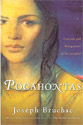
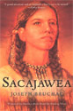
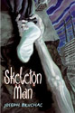

2011 Book Week Author
Joseph Bruchac
Joseph Bruchac lives in the Adirondack Mountain foothills town of Greenfield Center, New York, in the same house where his maternal grandparents raised him. Much of his writing draws on that land and his Abenaki ancestry. Although his American Indian heritage is only one part of an ethnic background that includes Slovak and English blood, those Native roots are the ones by which he has been most nourished. He, his younger sister Margaret, and his two grown sons, James and Jesse, continue to work extensively in projects involving the understanding and preservation of the natural world, Abenaki culture, Abenaki language and traditional Native skills. (See dictionary of the Western Abenaki Language). They also perform traditional and contemporary Abenaki music together as The Dawnland Singers.
He often works with his son James teaching wilderness survival and outdoor awareness at the Ndakinna (Our Land) Education Center, their 90 acre family nature preserve which was the first property placed in a Conservation easement in Saratoga County in upstate New York.



His early professional goal was to become a naturalist, and he spent three years studying Wildlife Conservation at Cornell University before a deepening interest in writing led him to switch his major and graduate with a B.A. in English. His lifelong interest in the natural world has been a frequent focus in his writing, especially in the best-selling “Keepers of the Earth” series he co-authored with naturalist Michael Caduto. He also earned a master's degree from Syracuse University and a Ph.D. in Comparative Literature from the Union Institute of Ohio.
His work as an educator includes three years of volunteer teaching in Ghana, West Africa and eight years of directing a college program for Skidmore College inside a maximum security prison. A former college varsity wrestler at Cornell, he has worked as a high school and junior high school wrestling coach. He also holds a fourth degree black belt and has spent over thirty years studying and teaching Pentjak-silat, the martial art of Indonesia.
Founder and Executive Director of The Greenfield Review Press, he has edited a number of highly praised anthologies of contemporary poetry, including Songs from this Earth on Turtle's Back and Breaking Silence (winner of an American Book Award). His poems, articles and stories have appeared in over 500 publications, from American Poetry Review to National Geographic. He has authored more than 120 books for adults and children, including Sacajawea, Crazy Horse’s Vision, Geronimo, A Boy Called Slow, Eagle Song and Skeleton Man. His honors include a Rockefeller Humanities fellowship, a National Endowment for the Arts Writing Fellowship for Poetry, the Hope S. Dean Award for Notable Achievement in Children's Literature and the Lifetime Achievement Award from the Native Writers Circle of the Americas.